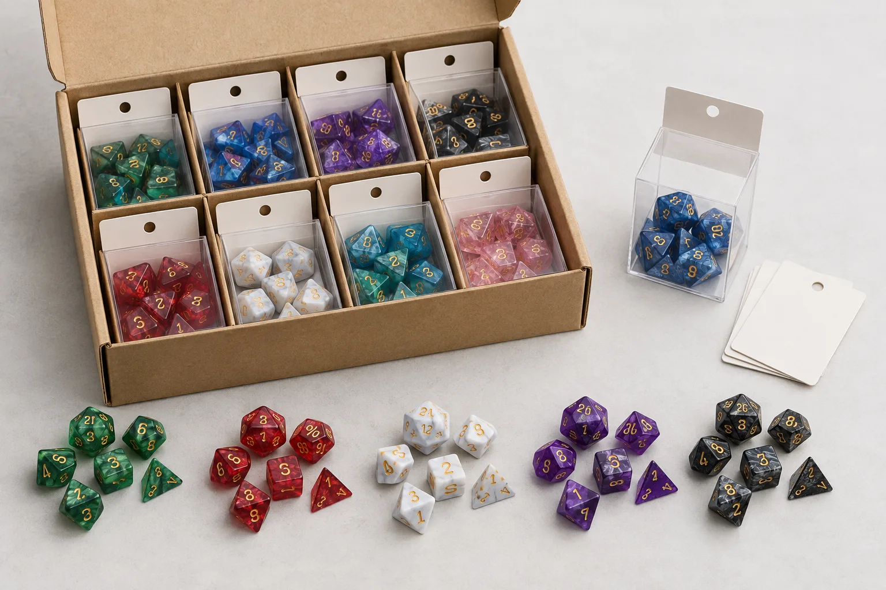

People often ask how many dice are in a D&D set before their first session, when replacing a missing die, or when planning a retail or wholesale assortment. The answer is simple for the standard format, but product listings can be confusing because some sellers call a single d20 a set, some add extra dice, and premium collections may include a tray, bag, tin, or oversized die.
This guide explains the standard count, what each die is used for, why the percentile die is included, and how to decide whether one set or several sets make sense. It also gives practical advice for game stores, distributors, dice brands, and RPG creators who need to buy bulk polyhedral dice rather than one personal set.
How many dice are in a standard D&D set?
A standard polyhedral D&D dice set contains seven dice:
| Die | Number of dice | Common tabletop use |
|---|---|---|
| d4 | 1 | Small weapon damage, spell effects, and limited-use modifiers |
| d6 | 1 | Weapon damage, healing, fall damage, and dice pools |
| d8 | 1 | Weapon damage, healing, class features, and hit dice |
| d10 | 1 | Damage, percentage-style rolls, and class or item effects |
| Percentile d10 | 1 | Tens digit for a d100 roll, usually marked 00 through 90 |
| d12 | 1 | Heavy weapon damage, hit dice, and larger random tables |
| d20 | 1 | Attack rolls, ability checks, saving throws, and initiative |
So, the direct answer to “how many dice are in a D&D set?” is seven for the familiar complete set. The word “standard” matters. A two-piece set of only a d20 and d6 can be useful, but it is not the normal seven-piece polyhedral set. Likewise, a premium package may contain seven dice plus accessories, while a bulk retail pack may contain several complete sets.
What are the seven dice in a D&D set?
The seven dice are named after the number of faces on each shape. The letter “d” means “die,” and the number tells you the number of faces. A d20 has twenty faces, a d8 has eight faces, and so on. This naming system is also used in many other tabletop role-playing games, so a set may be described as a D&D set, RPG dice set, polyhedral dice set, or 7-piece dice set depending on the seller and audience.
The d4
The d4 is the small pyramid-shaped die with four numbered faces. It is often used for low damage values, short spell effects, and small bonuses. Because its shape is pointed, a storage bag or insert should keep the die from pressing into softer packaging materials. For retail assortments, a clear number fill and a strong product photo help shoppers recognize the d4 quickly.
The d6
The d6 is the familiar cube-shaped die. It appears in tabletop RPGs for weapon damage, healing, fall damage, random tables, and abilities that roll several dice together. Players who use multiple d6s often buy extra dice rather than rolling the same cube repeatedly. A complete seven-piece set has one d6, but a character may benefit from a separate d6 pack.
The d8
The d8 has eight triangular faces and is common for medium weapon damage, healing effects, and class hit dice. It is easy to identify once the player learns the silhouette, but the number layout can vary by manufacturer. When sourcing custom or wholesale dice, check that the numerals are deep or clear enough to read and that the number fill contrasts with the base color.
The d10 and percentile die
A standard set includes two ten-sided dice. One is the regular d10, usually numbered 1 through 10 or 0 through 9 depending on the design. The other is the percentile die, which represents tens. When rolled together, the two dice can produce a result from 01 to 100. For example, a 40 on the percentile die and a 6 on the regular d10 represents 46.
The d12
The d12 has twelve faces and is often associated with heavier weapon damage, hit dice, and larger random tables. It is larger and less frequently used than the d6 or d20, which makes it valuable in a complete set: a player does not need to buy a separate d12 for every common action, but still needs one available when the rules call for it.
The d20
The d20 is the twenty-sided die most people associate with D&D. It is commonly used for attack rolls, ability checks, saving throws, and initiative. It is also the most visible die in product photography and custom dice design. A logo, symbol, or special high face is often placed on a d20 when a brand or RPG creator wants to create a distinctive custom set.

Why does a D&D set include two d10s?
The two d10s have different jobs when used together. The regular d10 supplies the ones digit, while the percentile die supplies the tens digit. Together they act as a d100. The percentile die may show 00, 10, 20, 30, and so on, while the regular d10 supplies 1 through 9 or 0 through 9 according to the numbering convention.
This is why a complete set has seven pieces even though many new players first count only the seven different shapes. The d10 and percentile die are both ten-sided, but they are not interchangeable for every purpose. A product description should identify the percentile die clearly, especially when a buyer is comparing a 7-piece set with a basic “assorted dice” pack.
Is one D&D dice set enough for one player?
For a new player, one standard seven-piece set is usually enough. It covers the common die types needed for character creation and play, and it keeps the first purchase simple. A player can use a dice roller or share a die with the table when an effect needs a die they do not own. Our online dice roller can also help players check a result while learning what each die shape does.
One set may feel limiting when a character rolls several dice at the same time. A spell may require multiple d6s, a weapon may roll more than one die, or a group may want to resolve several effects without passing dice around. These situations do not mean the original set was incomplete. They simply mean the player has reached a practical reason to add duplicate dice.
When should you buy extra D&D dice?
Extra dice are useful in five common situations:
- Multiple-die damage: Extra d6s, d8s, or d10s are faster than rolling one die repeatedly.
- Multiple characters: A group can avoid sharing a single set when each player brings their own.
- Game master supplies: A game master may keep spare dice for monsters, NPCs, tables, and replacement rolls.
- Theme or color organization: Different colors can separate players, damage types, factions, or encounters.
- Collection and display: Premium metal, sharp edge resin, liquid core, hollow, or oversized d20 products are often purchased in addition to a regular play set.
For most buyers, the best next purchase is not automatically another identical seven-piece set. If a player mainly needs extra damage dice, a focused d6 or d8 pack may be more useful. If the player wants a different visual theme, another complete set makes sense because it adds every die shape in a consistent colorway.
What other D&D dice set sizes are common?
Retailers and suppliers use several common formats:
| Format | What it usually contains | Best fit |
|---|---|---|
| 7-piece set | One d4, d6, d8, d10, percentile d10, d12, and d20 | New players, gifts, character sets, and standard retail shelves |
| Extra-dice set | Several d6s, d8s, d10s, or a mixed duplicate assortment | Players and game masters who roll pools or repeated damage dice |
| d20 set | One or more d20s, sometimes oversized or themed | Promotional items, display products, events, and collector programs |
| Premium collector set | Complete dice set with metal, sharp edge, hollow, liquid core, or upgraded packaging | Gifts, deluxe rewards, private label collections, and premium shelves |
| Bulk assortment | Multiple complete sets or mixed SKU cartons | Game stores, distributors, subscription boxes, and event programs |
When comparing listings, read the piece count and the exact dice breakdown together. “Seven dice” should mean a complete polyhedral set, but sellers may use different names for promotional bundles. For wholesale purchasing, ask for SKU references, photos, packaging dimensions, carton quantity, and the available mix rather than relying only on the product title.
How should a game store choose D&D dice sets?
A game store usually needs more variety than one individual player. The goal is to give customers a clear choice at several price and style levels without making the shelf difficult to shop. A practical starter assortment can include standard resin 7-piece sets in several colorways, a small group of theme-led sets, a few premium options, and replacement or extra-dice formats.
Store buyers should review five details:
- Set completeness: Confirm that each standard set includes all seven expected dice, including the percentile d10.
- Number readability: Check contrast, engraving or printing quality, and how the set looks under retail lighting.
- SKU clarity: Keep product codes and color or theme names consistent for reorders.
- Packaging fit: Compare bags, tins, boxes, and display cartons by shelf footprint and protection.
- Reorder logic: Identify the colors and price points that can be replenished without rebuilding the whole assortment.
Our wholesale dice guide for game stores covers assortment planning in more detail. Buyers who want to review products visually can start with the wholesale dice catalog, then shortlist the SKU families that match their shelves, customer base, and price architecture.
How many D&D sets should a wholesale buyer order?
There is no single correct quantity because the right order depends on the sales channel, number of SKU variations, packaging, and expected reorder cycle. A store opening a new RPG section may want a broad but controlled range of seven-piece sets. A distributor may need deeper quantities of repeatable colorways. A dice brand or RPG publisher may want a smaller sample phase before committing to a private label line.
Use this simple planning method:
- Start with the number of customer-facing SKU variations, not only the total number of dice.
- Separate standard catalog sets from custom logo, custom color, metal, hollow, or oversized products.
- Ask for MOQ by dice type and packaging format because the dice MOQ and printed box MOQ may differ.
- Request samples before approving a large order so you can check finish, number readability, weight, and packaging fit.
- Keep a reorder plan for the best-selling colors instead of spreading the budget across too many low-volume designs.
If you are planning a private label or campaign collection, send the supplier the target set format, material, color references, logo or symbol artwork, estimated quantity, packaging direction, delivery country, and target launch date. The free catalog and sample kit request is a practical starting point when you need to compare real products before confirming a quote.
Can a custom D&D dice set have more or fewer than seven dice?
Yes. Seven is the standard complete set format, not a rule that every custom collection must follow. A publisher may create a d20-only promotional product, a class-themed set with duplicate dice, a damage-dice pack, or a premium collection with extra tokens and accessories. A game store may also choose mixed packs that contain several d6s for systems or products that use dice pools.
For custom projects, define the set contents before artwork and packaging are finalized. A box designed for seven dice may not protect ten metal dice, and an insert for a complete polyhedral set may leave unused space around a d20-only product. The final quote should reflect the actual dice count, material, finish, logo placement, packaging format, quantity, and destination.
For custom RPG dice, you can review options on our custom RPG dice page. It covers color, inclusions, sharp edge resin, metal, custom faces, packaging, samples, and private label project planning.
How many dice are in a D&D set? FAQ
How many dice are in a standard D&D set?
A standard D&D polyhedral set has seven dice: one d4, one d6, one d8, one d10, one percentile d10, one d12, and one d20.
What are the seven dice in a D&D set?
The seven dice are the d4, d6, d8, d10, percentile die, d12, and d20. The percentile die is a second d10 marked in tens, such as 00, 10, 20, and 90.
Is one D&D dice set enough for a new player?
Usually, yes. One seven-piece set is enough to learn the game and make most common rolls. Extra d6s, d8s, d10s, or d20s become useful when a character rolls several dice or when the table wants to avoid sharing.
How many dice sets should a game store stock?
Start with a mix of complete seven-piece sets, then add d20-only products, extra-dice packs, theme sets, and premium products according to customer demand, shelf space, and reorder data.
Can a custom RPG dice set have more or fewer than seven dice?
Yes. Seven is the standard format, but custom collections can use d20-only formats, duplicate damage dice, mixed assortments, or premium sets with additional accessories. The final dice count should be confirmed before packaging is designed.
Continue planning your dice assortment.
Types of D&D Dice
Review the common polyhedral dice shapes, names, and uses before choosing a set.
Wholesale Dice Catalog
Browse resin, metal, hollow, and exotic dice catalog pages before sending a SKU shortlist.
Catalog & Sample Kit Request
Request catalog files and sample kit options for a store, brand, publisher, or campaign project.
Build a seven-piece dice assortment that fits your buyers.
Send your target customer, preferred materials, quantity range, selected themes, and packaging direction. We can help compare catalog SKUs, sample kit options, MOQ paths, and custom RPG dice formats.
Final answer
The standard answer is seven dice in a D&D set: d4, d6, d8, d10, percentile d10, d12, and d20. One set is usually enough for a new player. Extra dice, duplicate sets, premium materials, and custom packaging become useful when the product needs to support faster play, multiple players, retail presentation, private label branding, or a larger RPG campaign.